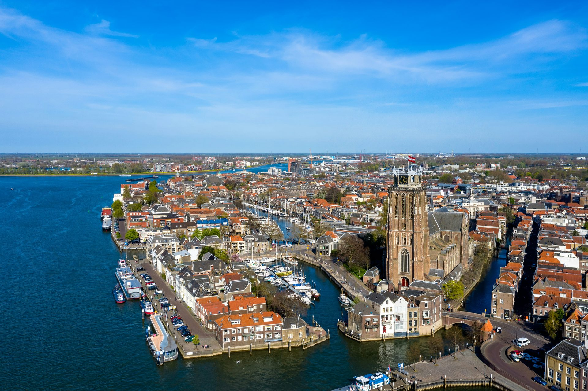

IT Support & Computerhulp in Zuid-Holland
Geen stress: wij lossen uw computer-, WiFi- of printerprobleem vandaag nog rustig voor u op. Aan huis in Zuid-Holland (o.a. Rotterdam, Spijkenisse, Hoogvliet) of direct op afstand.
-
Rustige uitleg in gewone mensentaal — gegarandeerd zonder moeilijk vakjargon -
Heldere tarieven vooraf afgesproken, geen verrassingen achteraf -
7 dagen per week bereikbaar voor particulieren, senioren en ZZP
Waarmee kunnen we u direct helpen?
Klik op uw situatie voor gerichte ondersteuning bij u aan huis of direct op afstand.
Laptop of PC traag
Start niet op, virussen, foutmeldingen of trage werking vakkundig en snel verholpen.
WiFi & internet storing
Geen internet, haperend bereik op zolder of in de tuin, modem & router installatie.
Printer weigert dienst
Printer offline, draadloos printen weigert, scanner aansluiten of strepen op papier.
E-mail, mobiel & tablet
Wachtwoord vergeten, mail instellen op telefoon of tablet, DigiD en veilige back-ups.
Helpen jullie ook bij mij aan huis?
Voer uw 4-cijferige postcode in voor directe regio-controle in Zuid-Holland:
Ondersteuning voor alle gangbare merken & providers
Zo eenvoudig werkt het:
In 3 ontspannen stappen van computerstress naar een werkende oplossing aan huis of op afstand.
Bel of stuur een appje
Vertel kort wat er aan de hand is in uw eigen woorden. Geen technische termen nodig; u krijgt meteen rustig advies en een heldere prijsindicatie.
Aan huis of op afstand
We plannen snel een moment dat u het beste schikt. Franklin komt persoonlijk bij u langs in Zuid-Holland of helpt u direct mee via een veilige verbinding.
Pas betalen als alles werkt
Samen controleren we of uw computer, WiFi of printer weer vlekkeloos functioneert. Pas als u tevreden bent, rekent u veilig af via mobiele PIN of Tikkie.
Onze IT Diensten in Zuid-Holland
Hulp nodig met uw computer, laptop, WiFi, printer, telefoon of website? Techuis ICT helpt particulieren, senioren en ZZP'ers aan huis of direct op afstand.
Wie Wij Zijn
Persoonlijke, geduldige IT-hulp zonder ingewikkeld vakjargon. We lossen uw computerprobleem vakkundig op én leggen het rustig aan u uit, zodat u het daarna zelf ook begrijpt.

Computer & Laptop Hulp
Trage pc sneller maken, virussen verwijderen, Windows 11 updates, back-up en opschonen.
WiFi & Thuisnetwerk
Slecht bereik op zolder of in de tuin verhelpen, modem & router installeren, stabiel internet.
Printer & Scanner
Printer offline meldingen, draadloos printen vanaf mobiel of pc, scanner instellen en koppelen.
Telefoon & Mobiele Apps
Nieuwe telefoon inrichten, contacten & foto's overzetten, WhatsApp instellen en duidelijke uitleg.
Tablet & Apple iPad
iPad instellen, videobellen met kinderen/kleinkinderen, DigiD, e-mail en handige apps installeren.

Hulp op Afstand
Geen wachttijd: binnen enkele minuten kijken we veilig mee op uw scherm via TeamViewer.
Smart TV & Apparaten
Smart TV aansluiten, streamingdiensten instellen, slimme deurbel of thermostaat aan WiFi koppelen.
Website Laten Maken
Professionele, snelle en mobielvriendelijke websites voor lokale ondernemers, inclusief domein en beheer.
7 Dagen per week support
Techuis ICT staat 7 dagen per week voor u klaar. Of het nu gaat om snelle computerhulp op afstand of een spoedbezoek aan huis in Zuid-Holland.
Heldere & transparante tarieven
Vooraf duidelijkheid over de kosten zonder verrassingen achteraf. No Cure, No Pay garantie bij de eerste diagnose en altijd inclusief btw.
Geduldig & zonder vakjargon
Deskundig, betrouwbaar en betrokken. We lossen uw probleem rustig op én leggen het stap-voor-stap uit in gewone mensentaal.
Wat onze klanten in de regio vertellen
Echte ervaringen van particulieren, senioren en zelfstandigen in Rijnmond en Drechtsteden.
“Mijn printer weigerde al weken dienst en de wifi viel steeds weg op zolder. Franklin van Techuis was binnen twee uur bij mij in Spijkenisse. Hij legde alles heel rustig uit zonder moeilijke computertermen. Alles werkt weer perfect!”
“Als zelfstandig adviseur kan ik het me niet veroorloven dat mijn e-mail of laptop hapert. Techuis heeft mijn back-up en Microsoft 365 strak ingericht en beveiligd. Snelle service en een duidelijke factuur zonder verborgen toeslagen.”
“Op zondagavond viel ons internet plotseling uit terwijl de kinderen moesten leren voor tentamens. Techuis nam direct op en heeft ons op afstand binnen een half uur weer online gekregen. Echte vakmensen met passie voor hun werk!”
“Ik vond inloggen met DigiD en internetbankieren altijd erg spannend. De monteur heeft met veel geduld alles ingesteld op mijn tablet en duidelijke stappen voor me opgeschreven. Nu kan ik het met een gerust hart zelf doen.”
Veelgestelde vragen
Antwoorden op veelgestelde vragen over IT support en computerhulp in Zuid-Holland.
IT Support bij u in de regio
Techuis ICT biedt computerhulp en IT support aan huis en op afstand in meerdere plaatsen in Zuid-Holland. Kies uw regio voor meer informatie.
IT Support Rotterdam
Computerhulp, WiFi, printer en laptop ondersteuning aan huis of op afstand.
IT Support Spijkenisse
Snelle computerhulp voor particulieren en ouderen, bij u thuis.
IT Support Hoogvliet
Hulp bij laptop, WiFi en e-mail — duidelijk en zonder stress.

IT Support Dordrecht
Betrouwbare computerhulp aan huis of via hulp op afstand.
Veelvoorkomende IT problemen in uw regio
Direct hulp bij computer- en netwerkproblemen in Zuid-Holland.